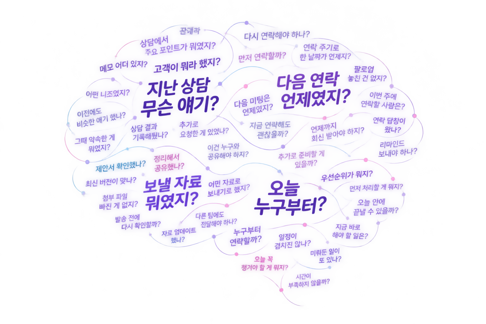

보험설계사를 위한 퍼스냅스 · 가상 사용 흐름 시안
새 고객을 챙기는 사이,
새 고객을 챙기는 사이,
다시 연락할 고객을
놓칩니다.
제안서를 보낸 고객, 다음 달 다시 만나기로 한 고객.
대화는 흩어진 기록에, 다음 약속은 머릿속에 남습니다.
흩어진 상담 기록을 모으면, 다음 연락할 고객과 일정이 보입니다.

보험 영업에 쓸 생각의 자리가 좁아집니다머릿속 생각을 시각화한 콘셉트 이미지입니다.SCROLL TO FOLLOW ↓
다음 연락이 보이는 순간부터, 그 연결이 만들어지는 과정까지.
아래 상황은 애니메이션 검토를 위한 가상 예시입니다.01 / 다시 챙길 고객WED · 09:12
지금은
“다음 주에 연락”을 기억에만 두거나 캘린더에 직접 적어둡니다.
다음 연락할 고객이,
일정에 다시 보입니다.
등록된 만남의 맥락을 바탕으로 다음 일정과 후속 할 일을 자동으로 생성해 캘린더에서 확인합니다.
현재 페이지의 기능 · 개인 Pro
CONTEXT → NEXT ACTION
10월의 할 일· · ·
월화수목금토일
192021222324252627282930311
✓
가상 일정 예시첫 상담 고객에게 다시 연락
↗02 / 그 시작, 만남 기록EARLIER · TUE 16:30
만남 직후에는
명함은 사진으로, 대화 내용은 메모와 메시지로 따로 남깁니다.
흩어진 명함과 대화를,
한 고객 기록으로 모읍니다.
음성 녹음과 사진 촬영으로 만남의 내용을 등록해 다음 행동의 근거로 남깁니다.
현재 페이지의 기능 · 만남 등록
FROM FRAGMENTS TO CONTEXT
▧ 명함 사진
⌁ 상담 메모
◉ 음성 기록
고
한 사람의 기록고객과의 첫 상담
✦만남의 내용 · 다음에 이어갈 대화
RELATIONSHIP MAP
나고객 A고객 B첫 상담 고객고객 D고객 E
첫 상담 고객만남의 맥락이 연결됐어요
03 / 관계 확인WED · 09:10
지금은
연락처 목록을 훑으며 누구에게 먼저 연락할지 떠올립니다.
오늘 챙길 고객을,
관계 지도에서 확인합니다.
중요도와 카테고리를 살펴보며 지금 연락할 사람을 한눈에 파악합니다.
현재 페이지의 기능 · 관계 지도
ASK IN YOUR OWN WORDS
“지난주에 상담했던 그 고객,
무슨 이야기를 나눴지?” ↗
무슨 이야기를 나눴지?” ↗
✦
가상 검색 결과첫 상담 고객의 기록
지난 대화의 맥락을 다시 확인합니다.
04 / 연락하기 전NEXT WEEK
지금은
예전 메모와 메시지를 뒤져 무슨 대화를 했는지 찾습니다.
다시 연락하기 전,
지난 대화를 찾아봅니다.
일상적인 질문으로 등록된 대화와 만남의 맥락에서 고객의 기록을 찾아 확인합니다.
현재 페이지의 기능 · 개인 ProTHE CONNECTION CONTINUES다음 연락을 놓치지 않고,
다음 연락을 놓치지 않고,
고객과의 대화에 집중합니다.
흩어졌던 만남의 기록과 다음 행동이 이어집니다.
설계사✦고객
COMING NEXT · 출시 예정상황에 딱 맞는 맞춤형 메일 제안
연락할 시기가 되면 AI가 맥락에 맞는 메일 초안을 먼저 제안합니다. 사용자는 최종 검토자 역할만 수행하세요.